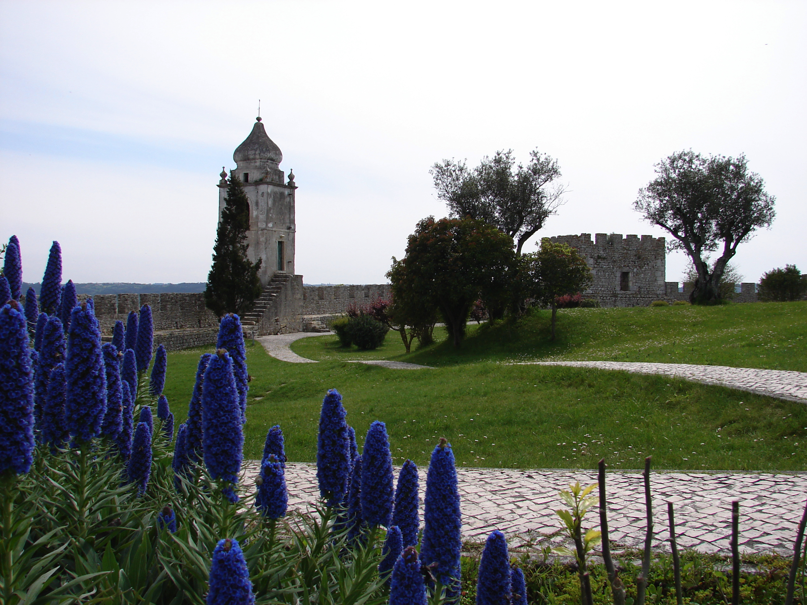
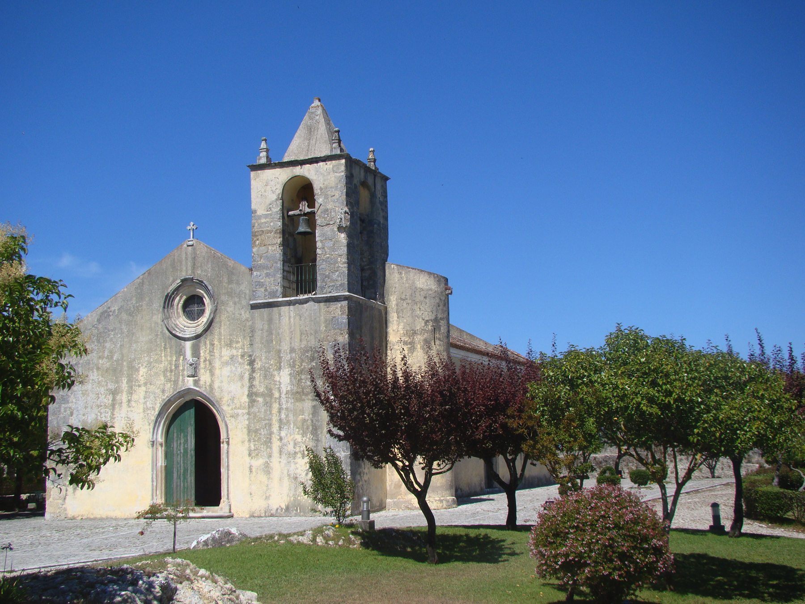
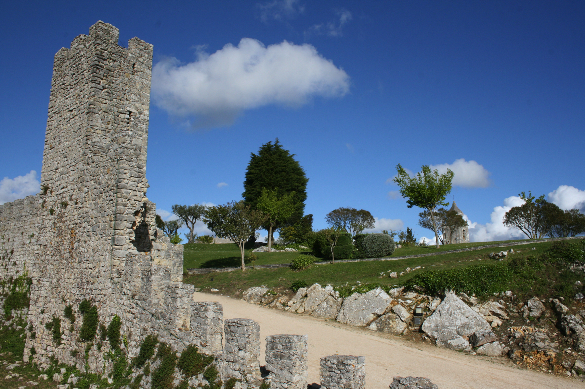
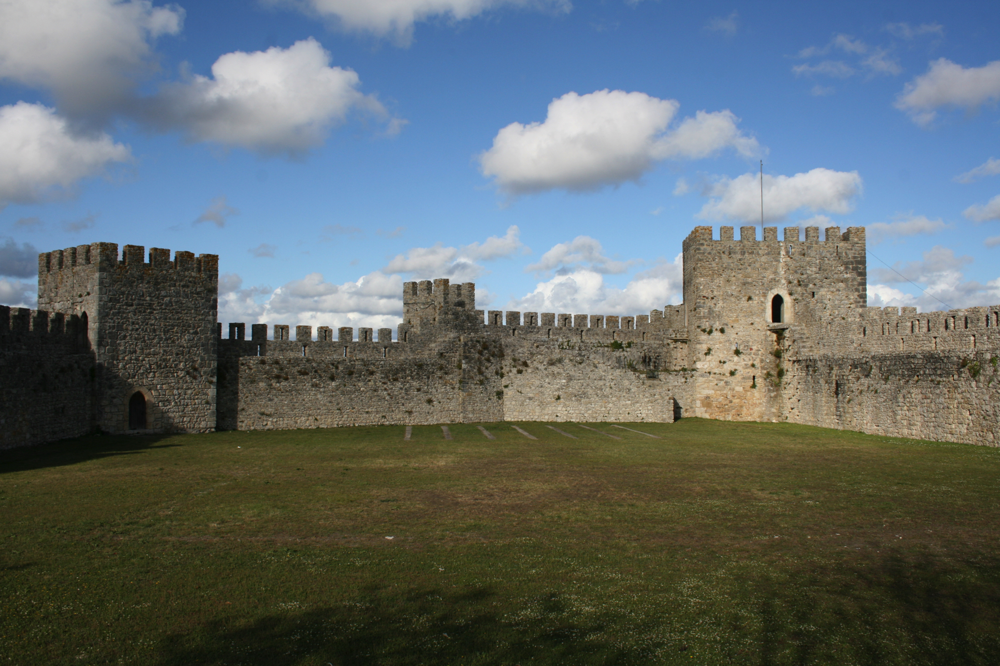
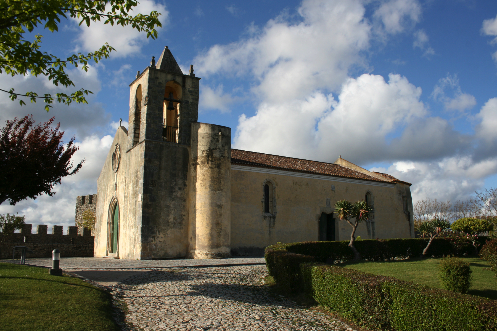
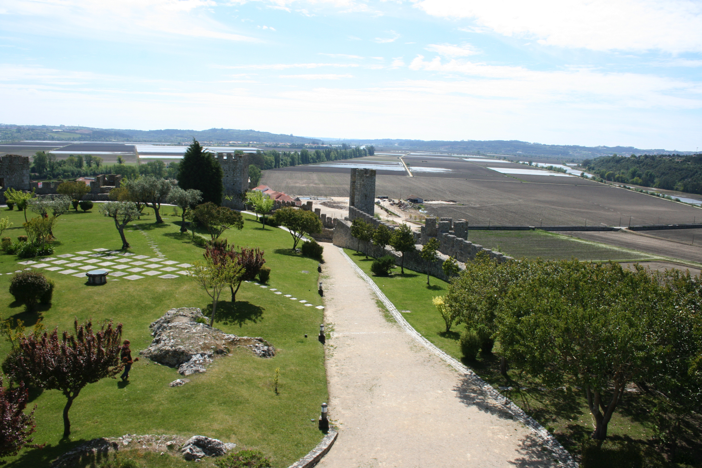

O Castelo de Montemor-o-Velho é uma das maiores atracções da vila. Com sua arquitectura medieval e vistas deslumbrantes sobre o Rio Mondego e a paisagem circundante, é um local imperdível para quem visita a região.





